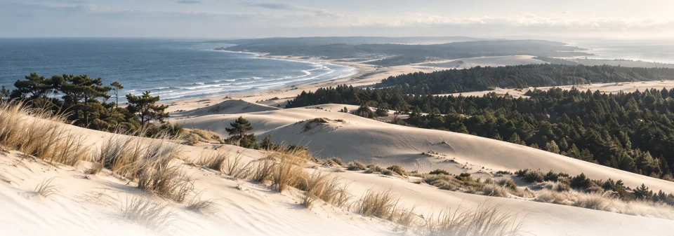
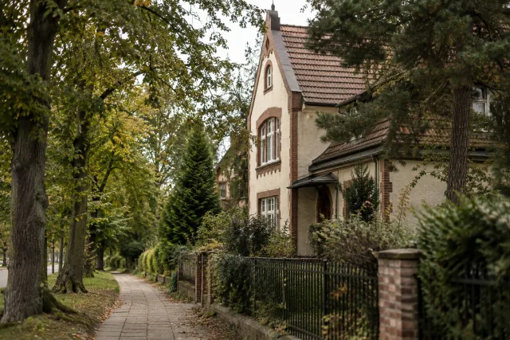
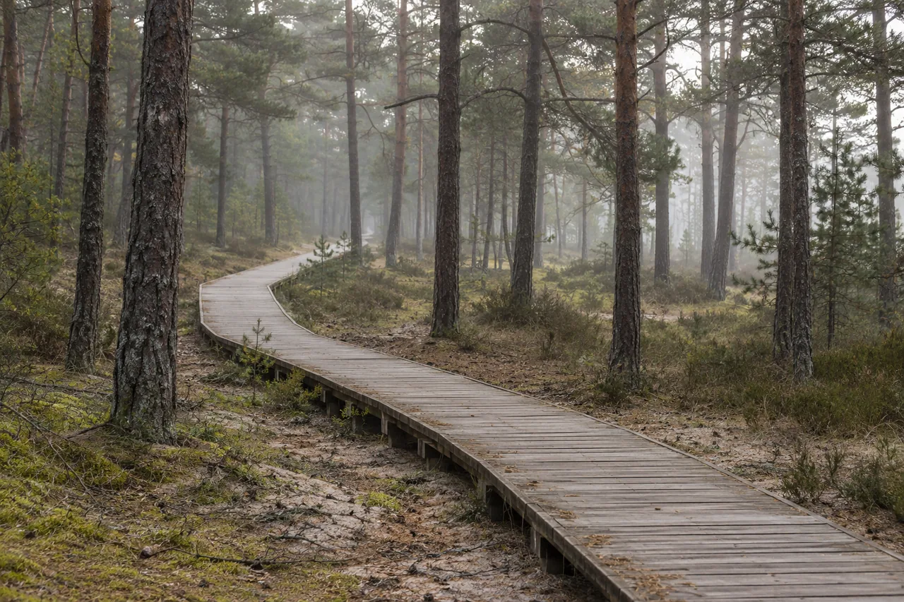

Куршская коса
Свет на сайте
Сегодня · Калининград
В режиме «Авто» свет меняется вместе с солнцем.
Начало астрономической ночи для этих суток не рассчитано.
Спланировать вечерБраузер не сохранил выбор. На этой странице режим работает.
Балтийский
характер
рядом
Маршруты на балтийской волне
Места, дорога и время для себя.
Предложим 2–4 остановки одной прогулки и запасное место. Сохранить день можно после просмотра.
Ваша поездка на Балтику
Одна прогулка или несколько дней у моря — выберите, с чего начать.
Начните с готовой прогулки:
Маршруты рассчитаны по карте. Проход, билеты и часы работы нужно сверить перед выходом.
Ваша поездка начинается здесь
Выберите прогулку — её остановки появятся в вашем маршруте.
Или начните с места, к которому хочется вернуться.
Ваши записи появятся здесь после загрузки поездки.
Готовые прогулки
Путь уже собран. Выберите прогулку,
а потом подстройте её под свой день.

Куршская коса
Куршская коса

Калининград

Открытие дня
Калининград
У Центрального парка стоит кирха памяти королевы Луизы. Рассмотрите её снаружи и оставьте время на аллеи рядом.
Прогулка сохранена. Добавьте её остановки или выберите места сами.
Меняйте порядок за ручку или стрелками. Новая прогулка дополнит выбранные точки.
Сохранённых прогулок пока нет.
Поезда туда и обратно
От вокзала до Зеленоградска — и обратно. Оставьте время на прогулку и дорогу к поезду.
Летом рейсов больше. У «Морского экспресса» своя станция — Зеленоградск-2. Выбирайте её отдельно от центрального вокзала. От Зеленоградска-2 к пляжу и обратно →
Балтика в ближайшие часы
Загружаем прогноз для прогулки…
Час прогноза: . Время Калининграда.
Данные Норвежского метеорологического института ↗, лицензия с указанием авторства ↗. Выбраны точки региона и ближайшие часы. Закат рассчитан для открытого горизонта.
Откройте поездку из файла, вернитесь к прежнему выбору или перенесите маршрут на другой телефон.
Выбор хранится в этом браузере. Файл поездки поможет перенести его на другое устройство.
Браузер не разрешает сохранение. Выбор останется только в этой вкладке.
Черновик хранится в этом браузере, если он разрешает сохранение. Файл поездки поможет перенести его на другой телефон. Как работает память →
Афиша и спокойный день
Актуальную дату и афишу можно открыть в календаре. Доступность мест уточните перед визитом.
Три места из нашего каталога. Это идеи для прогулки, часы работы и проход требуют проверки.
Калининград
Часы работы и доступ на дату поездки не подтверждены. Уточните перед визитом.
Источник сведений о местеКалининград
Часы работы и доступ на дату поездки не подтверждены. Уточните перед визитом.
Источник сведений о местеКалининград
Часы работы и доступ на дату поездки не подтверждены. Уточните перед визитом.
Источник сведений о местеЭто дата подготовки страницы. Откройте календарь для афиши на свой день; эти места помогут составить спокойную прогулку.
Калининград
Часы работы и доступ на дату поездки не подтверждены. Уточните перед визитом.
Источник сведений о местеКалининград
Часы работы и доступ на дату поездки не подтверждены. Уточните перед визитом.
Источник сведений о местеКалининград
Часы работы и доступ на дату поездки не подтверждены. Уточните перед визитом.
Источник сведений о местеEmail и подтверждение подписки — в сервисе Blogtrottr. Скопируйте адрес афиши выбранного города и вставьте его в поле RSS Feed.
Обновлено 4 октября 2026 года.